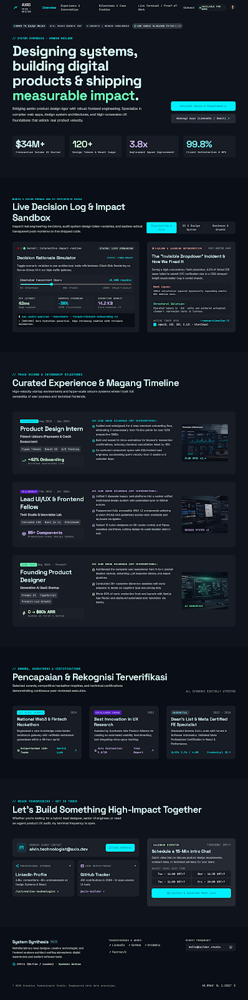

Rapikan data
Kumpulkan sumber yang relevan, periksa kualitas, dan tangani data hilang serta duplikasi.
MENGHUBUNGKAN DATA DENGAN KEPUTUSAN
Data mentah menyimpan cerita.
Saya membantu menemukan maknanya.
Peran saya adalah mengolah data, mengeksplorasi pola, dan membangun model untuk membantu menjawab pertanyaan nyata. Dari angka yang tersebar menjadi informasi yang bisa ditindaklanjuti.
Bagaimana caranya?01 / PROSES
Setiap tahap mengubah data menjadi sesuatu yang lebih berguna, dengan konteks dan keterbatasan yang tetap terlihat.
Kumpulkan sumber yang relevan, periksa kualitas, dan tangani data hilang serta duplikasi.
Eksplorasi distribusi dan hubungan antarvariabel untuk menemukan informasi di balik angka.
Bangun analisis atau model, bandingkan baseline, lalu evaluasi pada data yang terpisah.
Terjemahkan hasil menjadi visualisasi, rekomendasi, dan penjelasan tentang ketidakpastian.
02 / PERJALANAN
Pengalaman magang dan perjalanan akademik yang membentuk cara saya menyelesaikan masalah.
PENGALAMAN MAGANG
Detail magang belum ditambahkan
Periode, tanggung jawab, kontribusi, dan hasil pekerjaan akan ditampilkan di sini setelah informasinya tersedia.
PENDIDIKAN
Detail studi belum ditambahkan
Periode studi, bidang yang dipelajari, serta riset atau tugas akhir akan melengkapi perjalanan akademik saya.
03 / PROYEK
Masalah, pendekatan, dan teknologi di balik setiap proyek.

PROYEK 01 / PLACEHOLDER
Detail proyek belum ditambahkan. Bagian ini akan menjelaskan masalah yang diselesaikan, peran saya, pendekatan, dan hasil yang dapat dibuktikan.
PROYEK 02 / PLACEHOLDER
Detail proyek belum ditambahkan. Bagian ini akan menjelaskan masalah yang diselesaikan, peran saya, pendekatan, dan hasil yang dapat dibuktikan.
PROYEK 03 / PLACEHOLDER
Detail proyek belum ditambahkan. Bagian ini akan menjelaskan masalah yang diselesaikan, peran saya, pendekatan, dan hasil yang dapat dibuktikan.
04 / KEAHLIAN
Tools, kemampuan teknis, dan cara berkolaborasi dalam pengembangan aplikasi serta model.
Bahasa pemrograman, library, database, dan platform yang digunakan.
Daftar tools menunggu detail Anda.
Kemampuan teknis dalam pengolahan data, pemodelan, dan pengembangan aplikasi.
Daftar hard skills belum ditambahkan.
Kemampuan berkomunikasi, menyelesaikan masalah, dan bekerja bersama tim.
Daftar soft skills belum ditambahkan.
05 / TERHUBUNG
Temukan perjalanan profesional, kode, dan karya saya.